SMARTSHOPPER

Food waste remains a significant challenge, driven by inefficiencies in the grocery shopping experience and broader supply chain dynamics. Our design project aims to explore and address the root causes of this issue by understanding consumer behaviors and identifying opportunities to improve both the sustainability and efficiency of grocery shopping. By focusing on the needs of everyday shoppers, we seek to develop user-centered solutions that reduce food waste and create a more satisfying experience for consumers and retailers alike.
Objective
The project is dedicated to bringing a better solution to the online grocery shopping landscape. Our primary goal is to enhance the overall user experience for customers. Our design approach is centered around three key areas.
User - Providing a better solution for an online shopping experience that will facilitate the shopping and delivery of their groceries. Design a better online shopping environment that reduces the time and effort they spend commuting in-person shopping. Providing resources for discounts and sales is also our design aim.
Retailer - Our design intends to empower retailers by discovering and leveraging customer insights, offering a wider array of choices, and ensuring a swift checkout process. By maximizing the user experience, we anticipate a significant boost in sales for the retailers involved and a reduction in food waste.
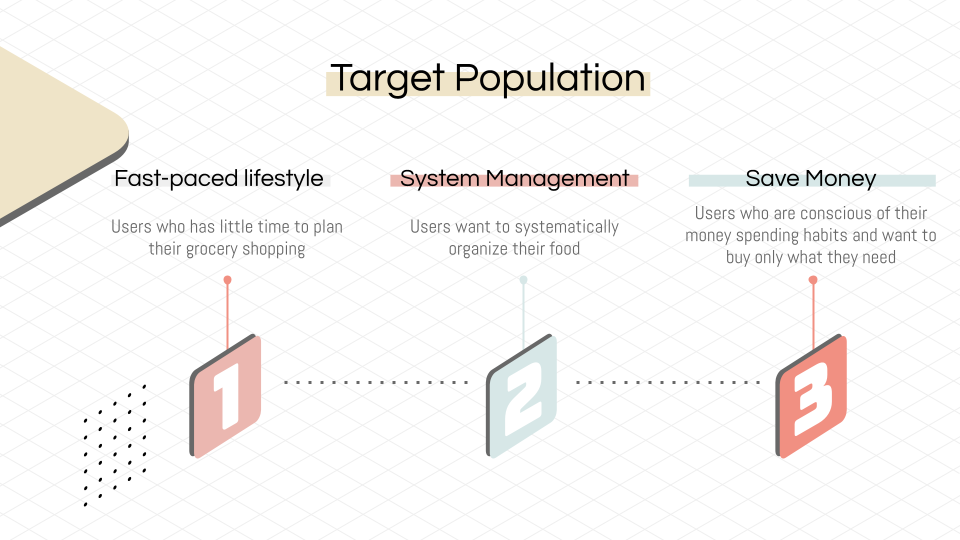
Research Methods
In this initial research phase, we focused on uncovering core issues within the grocery shopping experience. We began with online observation as our preliminary qualitative method, which enabled us to quickly gather insights into common consumer behaviors, preferences, and frustrations.
By analyzing user-generated content, we developed an affinity map using sticky notes to organize and categorize key themes. This process helped us visualize patterns in the data and identify three primary opportunity areas. These findings now serve as the foundation for our upcoming design concepts aimed at improving the grocery shopping experience and reducing food waste.
Preliminary Observations - Online Observation - To deepen our understanding of the online grocery shopping landscape, we employed online observation by analyzing news articles and various digital data sources. This approach enabled us to uncover market trends, consumer behaviors, and emerging dynamics within the digital grocery space. Our insights not only reflect the current state of the market but also inform a continuous refinement of our conceptual framework. By staying responsive to evolving consumer needs and preferences, we aim to design solutions that are both relevant and adaptable in the fast-paced world of online grocery shopping.
Ideation Process - Brainstorming/Affinity Map - After conducting online observation, we used affinity mapping in FigJam to systematically analyze consumer pain points in the grocery shopping journey. Individual frustrations were documented on yellow sticky notes and then grouped into broader themes using blue sticky notes, resulting in eight key categories—from grocery pick-up and meal prep to food storage. By further organizing these themes, we distilled our insights into three main focus areas: grocery shopping experience, food management, and receiving groceries. These perspectives now guide our concept ideation phase, providing a clear and structured foundation for solution development.

Design Directions
Concept One - Grocery Shopping Experience
The online shopping experience can occasionally become cumbersome, especially when an abundance of product information and detailed images fails to translate into accurate orders that align with the customer's requirements. The inconvenience of not receiving the desired items in a timely manner can be frustrating. In response to these challenges, our primary objective is to design a superior solution that enhances the overall shopping experience for users. We are committed to addressing issues related to information accuracy and product identification, ensuring that our design fosters a more efficient and satisfying online shopping journey for customers.
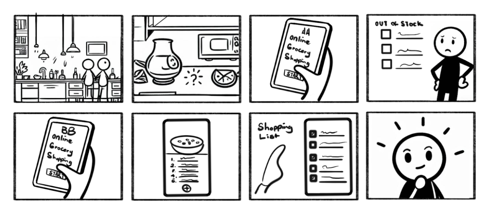
Concept Two - Food Management
Reducing food waste not only brings economic benefits but also contributes to environmental sustainability. The primary causes of food not being consumed on time, leading to excessive wastage, are the lack of awareness regarding food items in people’s households and inefficiencies within food organizations. The concept aims to create a centralized platform for tracking inventory, planning meals, and generating shopping lists. This organizational tool can simplify users' lives by assisting them in minimizing food waste and ensuring timely consumption of items before expiration. The concept is particularly beneficial for individuals and families with busy schedules and fast-paced lifestyles. Additionally, it aims to optimize users' time and reduce the costs associated with impulsive or redundant purchases.
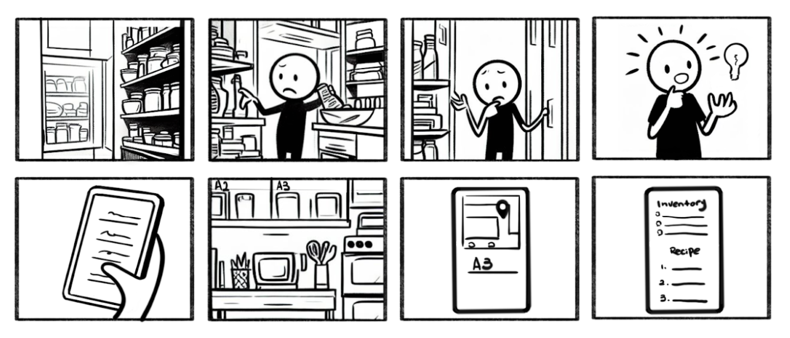
Concept Three - Receiving Grocery
This concept aims to renovate the curbside pickup process, mirroring the efficiency of a McDonald's drive-through lane. This involves creating a designated drive-through area where customers can quickly retrieve their groceries upon receiving a notification of readiness. The workflow begins with customers receiving notifications, then driving up to the pickup counter for verification using potential license plate recognition technology, and finally having their groceries loaded into their vehicle by staff. Technology integration is crucial, including robust notification systems, license plate recognition for customer verification, and integration with inventory management systems. Infrastructure requirements include designated lanes, clear signage, and counter setups conducive to efficient loading.
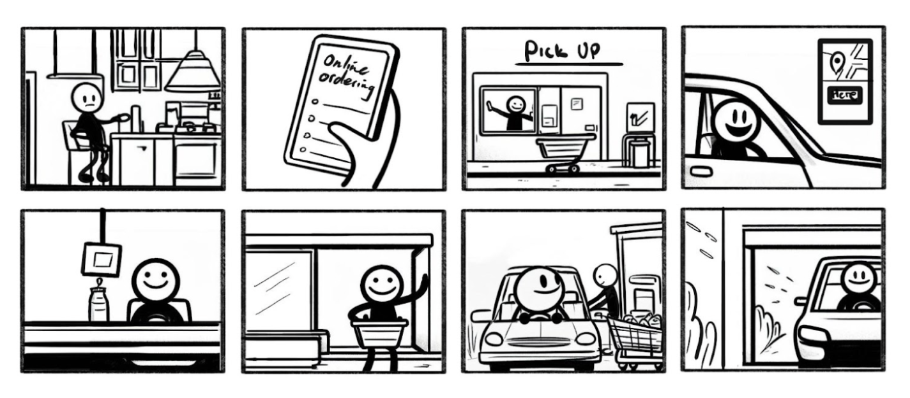
Study Design
Building on the insights from our literature review, we recognized the vital importance of effective food management and organization. Efficient resource use and minimizing food waste are essential to improving grocery-related processes. Our exploration of three core concepts revealed how deeply interconnected challenges in grocery shopping and organization impact user satisfaction. Our study design centers on understanding user behaviors, habits, and experiences around grocery procurement, storage, and tracking. Additionally, we aim to investigate how shopping and storage practices influence food waste.
- Understanding of the hurdles of in-store grocery shopping.
- Understanding of online shopping.
- The relationship between food wastage and organized shopping.
- The use of recipes and food management.
Survey Design
Our survey explored key aspects of online and in-store grocery shopping, emphasizing the role of recipes and individual behaviors in food organization. Using a carefully designed survey tool, we gathered insights from a diverse group of participants recruited from both the university and broader community. The survey was distributed via email and Slack to students in the UMSI, Architecture, and Urban Planning departments, resulting in 33 responses. These varied perspectives provide a strong foundation for understanding the complex dynamics of food organization and shopping habits.
Survey Result
Out of the 33 responses collected, the majority of respondents fell within the 18-29 age range, indicating a younger demographic engaged in the survey. This suggests a potential skew towards preferences and habits more common among younger consumers. Moreover, the predominance of female respondents could reflect the traditionally observed trend of women taking on a larger role in household grocery shopping.
Shopping Preferences and Behavior - The overwhelming preference for physical stores among respondents, as indicated by 93.9% of respondents, highlights the enduring appeal of in-store shopping experiences. Factors such as the ability to select fresh produce and browse aisles contribute to this preference despite the growing popularity of online shopping platforms. The frequency of shopping in physical stores further underscores the importance of these locations in respondents' shopping routines.
Recipe Usage and Dietary Monitoring - The infrequent use of recipes for meal preparation suggests a reliance on familiarity and intuition rather than structured cooking guidance. This could reflect a preference for spontaneous and adaptable cooking practices, which may resonate with busy lifestyles and changing dietary preferences. The importance placed on monitoring dietary needs, with 60.6% of respondents indicating options 3 and 4 on a scale of 1 to 5, indicates a heightened awareness of health and nutrition among respondents. This emphasis on dietary consciousness may influence shopping decisions, leading to a preference for certain products or brands perceived as healthier or more aligned with personal dietary goals.
Challenges Faced in Grocery Shopping and Meal Preparation - The challenges identified in grocery shopping and meal preparation reflect common pain points experienced by consumers. Issues such as ingredient matching, recipe specificity, and time management highlight the complexities involved in meal planning and execution. These challenges may contribute to feelings of frustration and dissatisfaction, impacting overall satisfaction with the grocery shopping experience.
Conclusion - Overall, the analysis of grocery shopping habits and preferences reveals a complex interplay of factors shaping consumer behavior. Understanding these dynamics is essential for retailers, food producers, and policymakers seeking to adapt to evolving consumer preferences, enhance customer satisfaction, and drive sustainable growth in the grocery industry. By addressing the identified challenges and aligning offerings with consumer preferences, stakeholders can create more tailored and rewarding grocery shopping experiences for consumers. Based on the findings, We decided to adopt the food management approach for this project. Our concept is designing a scanning application for college students and working demographics with the implementation of a new barcode system for better food inventory documentation.
Refined Scope and Concept
To enhance our understanding and sharpen our focus, we conducted an in-depth competitor analysis of several food management applications by assessing them based on nine key features identified from survey insights. This analysis helps us identify opportunity gaps for our five main features (notification, inventory tracker, recipe generator, shopping list generator, grocery shopping assistant) and the advanced barcode system.
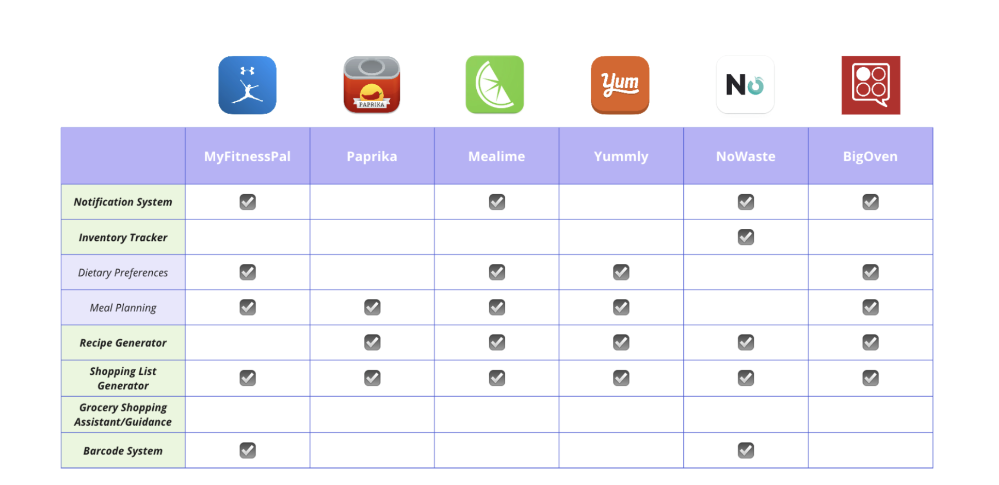
Opportunity Gap Analysis
The competitive analysis highlights a clear opportunity for our platform to stand out by offering a comprehensive grocery shopping assistant and an advanced barcode system with detailed consumer-facing information. Additionally, enhancing the integration and personalization of existing features like the inventory tracker, recipe generator, and shopping list can position our platform as a superior choice in the market.
- Grocery Shopping Assistant
- Gap: No current competitors offer a built-in assistant for in-store shopping.
- Opportunity: Our platform can provide real-time in-store navigation, product comparisons, and live updates on deals—filling a major market gap.
- Barcode System
- Gap: Most apps lack an advanced barcode system.
- Opportunity: We can offer a feature-rich barcode scanner that provides detailed product information, connects to inventory, and helps with organization and tracking.
- Inventory Tracker
- Gap: Only a few apps, like NoWaste, offer robust inventory tracking.
- Opportunity: By integrating our barcode system with real-time inventory updates, we can deliver a more accurate and user-friendly experience.
- Recipe Generator
- Gst apps lack an advanced barcode systemGap: While many apps suggest recipes, they are not well-integrated with users' existing ingredients.
- Opportunity: Our recipe tool will pull directly from the inventory tracker to suggest meals based on available ingredients, reducing waste and simplifying meal planning.
- Shopping List Generator
- Gap: List generators are common but static.
- Opportunity: Ours will dynamically update based on current inventory levels, recipe selections, and shopping behavior—saving time and improving efficiency.
- Notification System
- Gap: Current notifications are generic and not tailored to grocery needs.
- Opportunity: We will provide smart notifications personalized by inventory status, expiration dates, and user preferences (e.g., dietary restrictions).
User Journey Map
We have discovered that most food waste occurs because people are unaware of what they already own at home. To tackle this problem, we aim to apply 3 different strategies to improve the situation, and they are documentation, planning, and reminder.
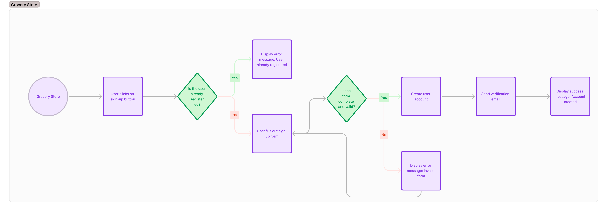
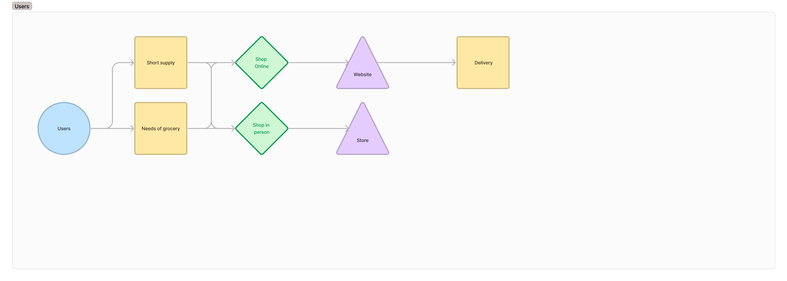
Detailed Plan
For the digital app, we found that our target users can benefit from the features of inventory tracker, scanning system, recipe and shopping list generator. The inventory tracker will exist alongside the new barcode system. Its main function is to record the essential data related to the food item. The recipe and shopping list generator are add-on features that allow users to plan meals and prepare ingredients for cooking at the scheduled time with effective use of ingredients.
Design Process
We started the design process with developing persons. We developed three personas - two primary and one secondary persona. These help us to gain valuable insights into our target audience's diverse needs and preferences.
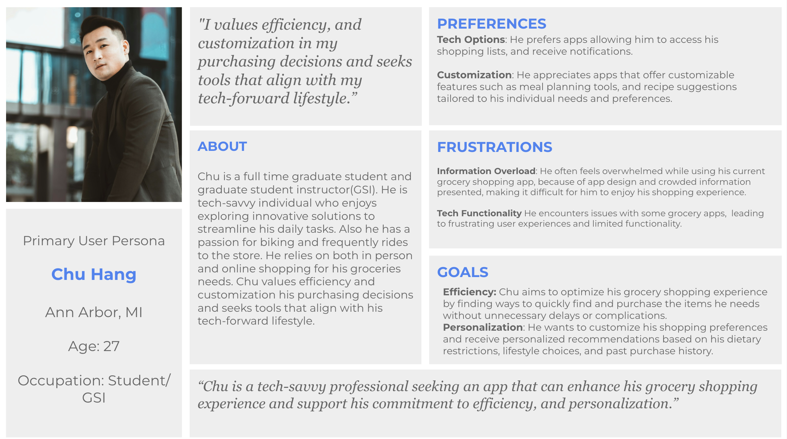
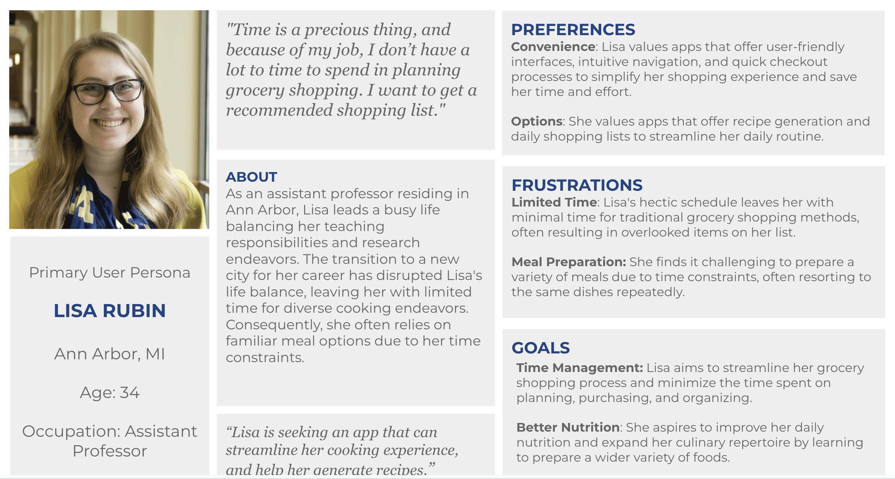
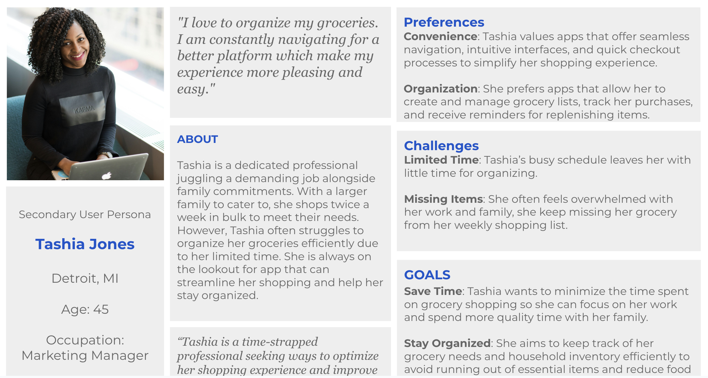
Low-fidelity prototype
After examining the information architecture, we began developing the low-fidelity prototype. We created detailed wireframes for key components such as the inventory tracker and notifications, scanning system, and receipt and shopping list generator. The goal of this process is to understand how each component can coherently coexist and help shape a harmonious interactive environment.
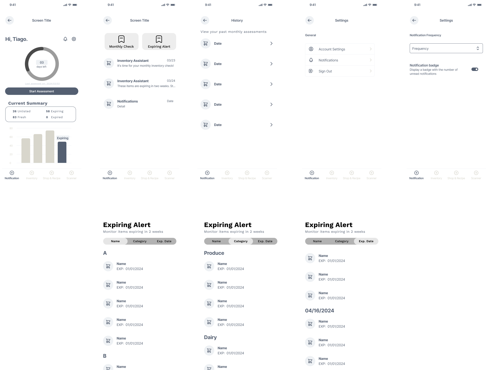
Logo Style Guide
We also explored the logo and the style guide we wanted to refer to for the project. Here are some early drafts for the logo.
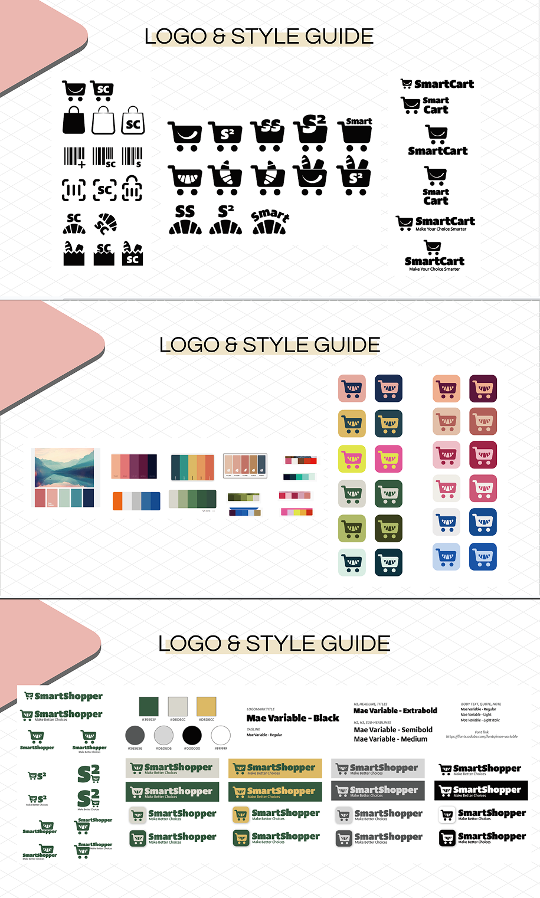